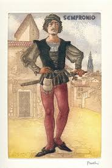
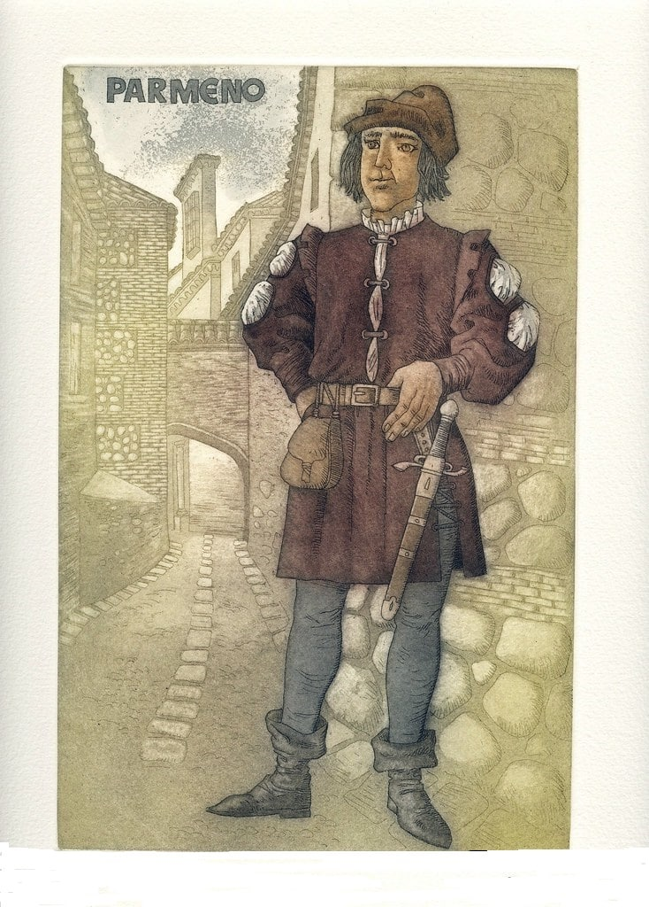
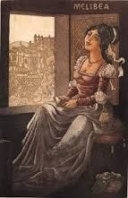

BREVE DESCRIPCION DE LOS PERSONAJES
Esto es un video corto donde podran conocer un poco acerca de la obra y los personajes. Aun asi, luego tendran una breve descripcion con un dibujo de cada personaje.

Calisto: De los personajes principales de la obra, lo describen como un mancebo enamorado. Calisto quedo enamordo de Melibea cuando su halcon se va y para en el huerto de Melibea. Él contaba con sus dos criados Sempronio y Parmeno, estos dos le hacian sus favores y servian como guardianes. Calisto estaba haciendo todo lo posible por contactar y obtener el amor de Melibea. Calisto luego de conseguir unas citas con Melibea, resbala de unas escaleras y cae muerto.
Sempronio: Criado y guardian de Calisto. Sempronio no salia del lado de Calisto pero al señor calisto humillarlo decide servirle a Celestina. Luego Sempronio es quien le recomienda a Calisto que vaya y le pida ayuda a Celestina una hechicera alcahueta. Sempronio se engañaba a el y a Calisto pero se aprovechaba de Calisto en muchas ocasiones. Hace un trato con Celestina para obtener parte de las ganancias. Muere a causa de estas ganancias. Y era el enamorado de Elicia.
Parmeno: Criado y guardian de Calisto. Parmeno es otro criado de Calisto pero es el contrario de Sempronio, Parmeno tiene muchos valores y jamas se aprovecharia de su señor. No estaba de acuerdo con la visita de Celestina porque sabia que con la hechiceria todo podria salir mal. Luego es persuadido por Celestina con Areusa, ya que Parmeno esta enamorado de esta. Va con Sempronio y muere tambien a causa de las ganancias.

Celestina: Vieja hechicera, usa la hechiceria en Calisto y Melibea. Celestina es describida como una vieja hechicera y alcahueta. Sempronio es quien contacta a la Celestina y se la presenta a Calisto. Celestina usa su hechiceria para llevar a cabo un philocaptio entre Calisto y Melibea. Hace un trato por ganacias y luego quiso quedarse con las ganancias y eso le gano le busco la muerte.

Sosia y Tristan: Segundos criados y guardianes de Calsito luegos de la muerte de Sempronio y Parmeno. No hay mucho que decir de Sosia y Tristan, ya que son los segundos criados de Calisto y estos terminan acompañando a Calisto a casa de Melibea cuando se resbala y cae muerto.

Elicia y Areusa: Son las cortesanas de la obra. Elicia y Areusa son cortesanas a cargo de la alcahueta Celestina. El proposito de estas en la obra es representar la sexualidad y son las enamoradas de Sempronio y Parmeno. Estas se molestaban cuando les hablaban de la belleza de Melibea.
Melibea: La enamorada de Calisto. Al principio no estaba interesada en Calisto, es por esto que Calisto termina haciendo el trato con Celestina. Melibea es quien sufre el philocaptio que le hace Celestina para que esta estuvviera enamorada de Calisto. Melibea es hechizada en su casa por la Celestina, y es entonces cuando tiene varias citas ocultas con su enamorado Calisto. Luego de la ultima cita donde Calisto muere, Melibea decide suicidarse para estar junto a su enamorado.

Alisa y Pleberio: Padres de Melibea. Son los padres de Melibea pero estan bastante ausentes en la obra, la mamá Alisa se da cuenta de lo que pasa entre Celestina y Melibea pero se va de la casa y no da mucha atencion a lo que ocurre. El papá simplemente a lo ultimo de la obra habla sobre como el dolor y la muerte de su hija era culpa del mundo pero luego concluye que era su culpa y culpa de ella.